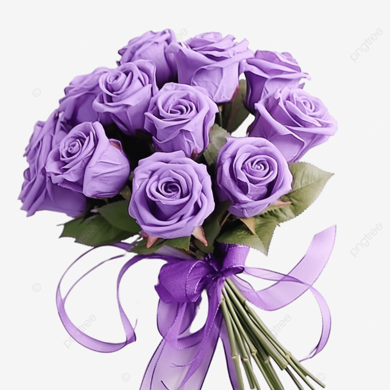
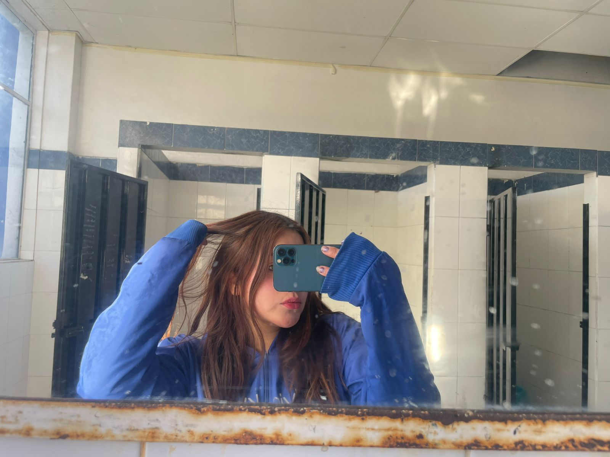
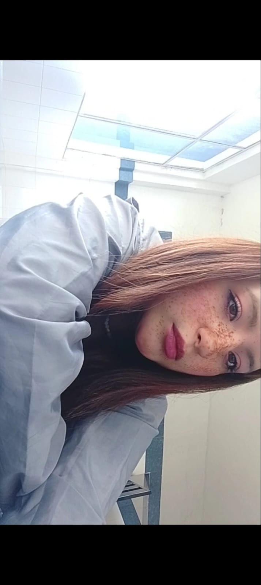
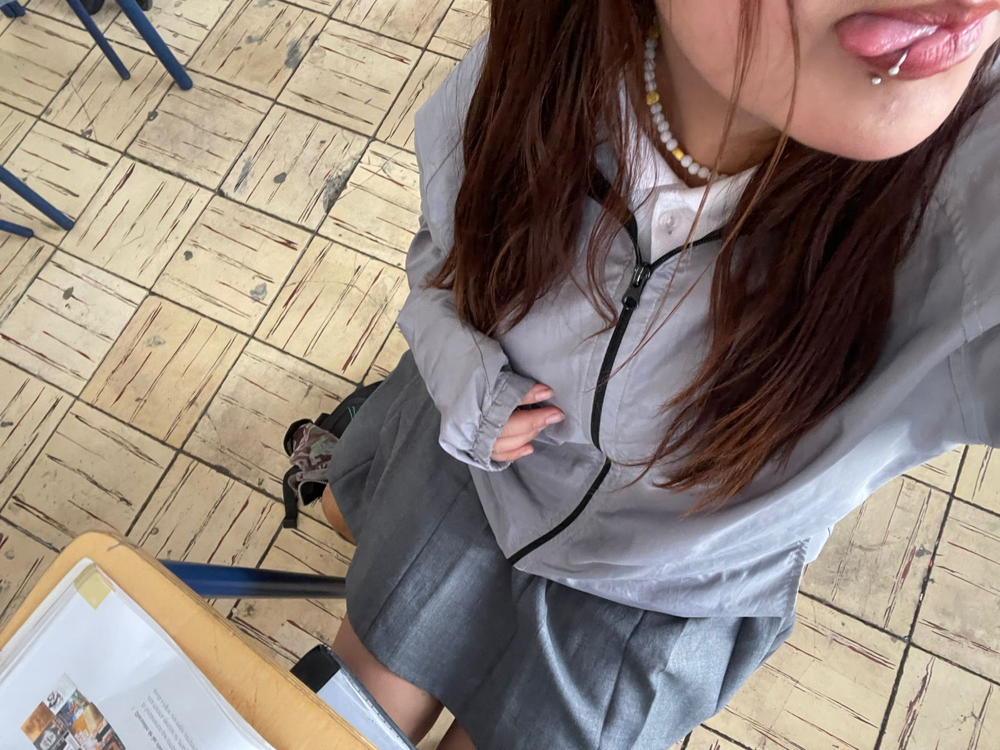
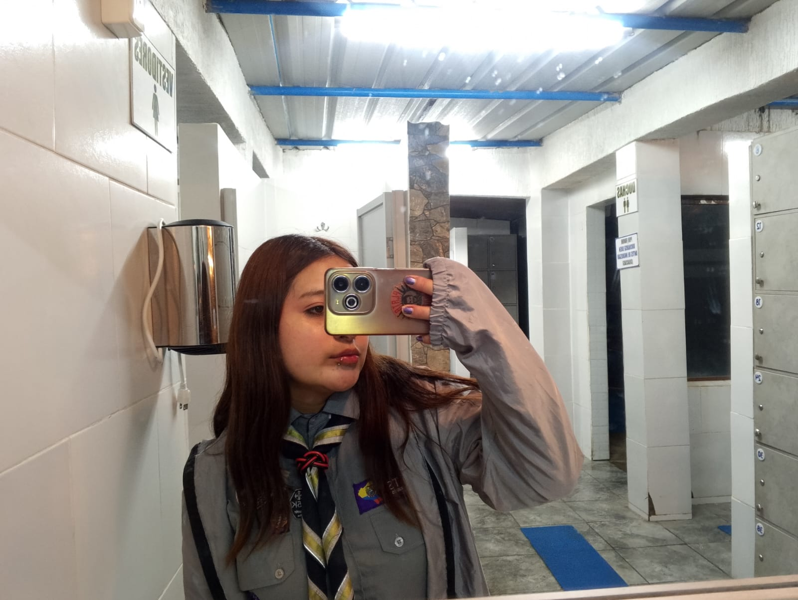
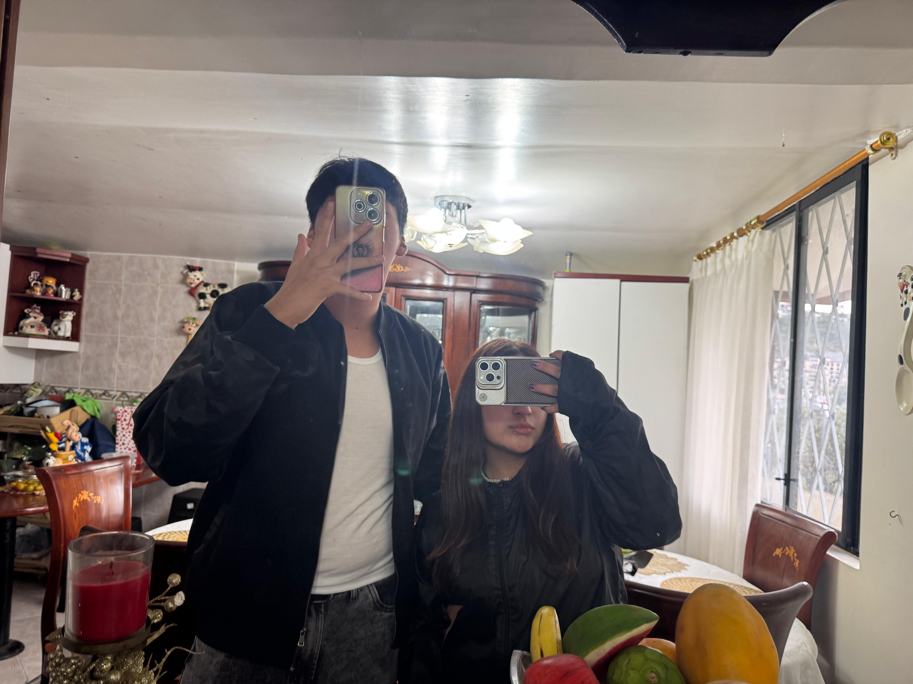

8 de marzo
Una carta para ti, mi Eli
Mi preciosa Eli,

Hoy quise escribirte esta carta porque no quería que este día pasara como una fecha cualquiera. El Día de la Mujer no es solo una celebración bonita, también es una ocasión para reconocer, admirar y valorar la fuerza, la ternura, la esencia y la grandeza de mujeres maravillosas como tú.
Y si hoy pensé en escribirte algo así, es porque para mí no eres cualquier persona. Eres alguien muy especial en mi vida, alguien que me importa de verdad, alguien que con su forma de ser logra hacer más bonitos mis pensamientos, mis emociones y hasta mis días.

Me gustas por muchas razones, pero más allá de eso, te admiro profundamente por la mujer que eres. Por tu forma de sonreír, por tu dulzura, por tu manera de transmitir paz, por esa luz tan tuya que se siente incluso en los detalles más pequeños. Tienes una presencia hermosa, de esas que no solo se notan, sino que también se sienten.
Hoy quiero recordarte que eres valiosa, importante y digna de todo lo bueno que existe. Quiero que nunca olvides que tu esencia tiene fuerza, que tu ternura tiene valor y que tu forma de ser deja huellas lindas en quienes tienen la fortuna de coincidir contigo.

En este Día de la Mujer quiero decirte que no solo celebro lo hermosa que eres por fuera, sino también todo lo que eres por dentro: tu sensibilidad, tu belleza, tu fuerza, tu corazón y esa manera tan especial en la que haces que todo se sienta más bonito.

Si hoy te escribo esto, es porque me nace. Porque cuando alguien de verdad te importa, no basta con pensarlo: también quieres demostrarlo. Y yo quería que en este día especial pudieras sentirte admirada, querida y recordada como la mujer maravillosa que eres.

Gracias por existir, Eli. Gracias por ser tan especial, tan linda y tan única. Y gracias también por inspirarme a querer hacerte sonreír. Ojalá esta carta te recuerde, aunque sea un poquito, lo mucho que vales y lo bonito que es tenerte en mi corazón.
Esta carta es sencilla, pero está hecha con cariño real. Y si al leerla logras sentirte especial, entonces todo esto ya valió la pena.
Algo que quería decirte
Si volviera a elegir una sonrisa para alegrar mis días, volvería a elegir la tuya.
Gracias por existir en mi vida.
Te amo mucho Eli